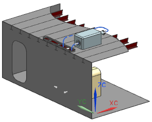
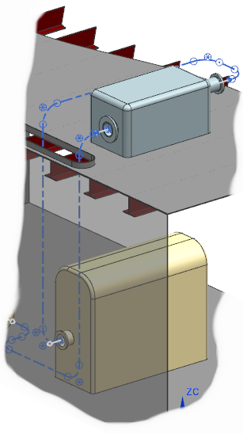
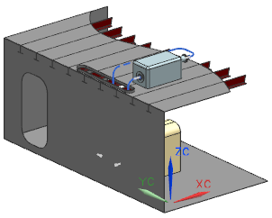
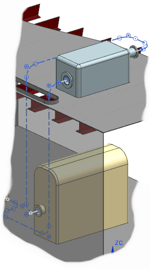

检查路径间隙
-
在装配导航器
 中，右击组件 rtg1_compartment 并选择显示。
中，右击组件 rtg1_compartment 并选择显示。
提示
点击选中节点复选框也能达到相同的效果。

所有的路径现在都从外罩的开口中穿过，连接到下方的端口中。
-
关闭所有部件。
在装配导航器  中，右击组件 rtg1_compartment 并选择显示。
中，右击组件 rtg1_compartment 并选择显示。

|
提示 |
点击选中节点复选框也能达到相同的效果。 |

所有的路径现在都从外罩的开口中穿过，连接到下方的端口中。
关闭所有部件。